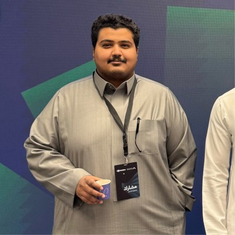

Available for work · 2026
Mohammad Almalke
AI Engineer & ML systems builder
I build intelligent systems end to end — data pipelines, model training, and LLM-powered products that make it to production. Based in Riyadh.
Selected work
All projects
About
“Models are the easy part — I build the systems around them that make intelligence useful.”

I’m an AI engineer in Riyadh who works across the whole span of a machine-learning system — the data underneath it, the model itself, and the interface someone actually has to use. Most of what I build is bilingual from the start, and much of it runs on-device or against local models rather than someone else’s API.
Lately that has meant a price-estimation engine over 781,382 Saudi property listings, an auditable loan assistant where a rule engine rather than the model makes the decision, and a static analyzer that catches the silent methodology errors that make results look better than they are. I trained at Tuwaiq Academy, and I gravitate toward problems where correctness is something you can check.
Education
B.Sc. Information Systems
AI / ML
- LLM agents · LangGraph
- XGBoost · scikit-learn
- ONNX · on-device inference
- Evaluation · ML methodology
Engineering
- Python · TypeScript
- FastAPI · Next.js
- DuckDB · Parquet · SQL
- Ollama · local models
Certifications
Achievements
-
Amad Hackathon 2026
Built PreCheck for the GenAI for FinTech track — an auditable loan assistant, with team MMYR.
-
AI Training Hackathon
Completed the Kanz AI programme with LAU ACE and the Ministry of Human Resources and Social Development, shipping an original AI project.
Contact